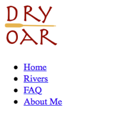

Adding More HTML and CSS
Activity Directions
Estimated time: 1:30 minutes
This week we will continue with the webpage we started in the previous activities. Open up the index.html file from last week in your editor to begin.
We got all the content in our page last week....but you might of noticed it doesn't look too great. Remember that HTML is responsible to get content on a page, but to style it we use CSS. Make sure you have completed the Intro to CSS and More HTML Tags Khan Academy lessons before continuing.
The first part of this activity will use the following html concepts or properties (review the links if you do not remember these from Khan academy):
-
Review Wireframe
First review the wireframe again to help remember what we are trying to do. Last week we created 'rows' and 'columns' with html elements, and then filled them with content.
As we added those structural tags last week did you notice anything about them? Whenever possible we tried to use tags that actually described what the content they would hold. This concept of using tags with meaning is called semantics. This becomes very important as pages become larger and more complex.
Semantics
So how do you know which of the semantic elements you should use when adding or grouping content? or when a simple
<div>is the right answer? We shouldn't try to make everything a<section>(a section is a portion of the page that contains at least a headline, paragraph, and possibly an image that cannot stand on it's own), and html becomes really hard to read when everything is just in a generic<div>. Here is a flowchart that might help.That flowchart talks about using the grouping elements, but what about other tags like <p> or <h2> or <ul>? At the end of the day, writing semantic HTML means that if you need to add a headline to your page you will use a <h2> and not a <p> or a <div>. If you are adding a list of something use a <ul> or <ol> and not a bunch of <p>s. If you do need a paragraph you don't use <h1> or any of it's siblings...even if you want the paragraph to be big! Always use the tag that best describes the content.
Note
At this point do not expect your page to look like the wireframe. We are laying a foundation, but have not learned how to position elements yet. Don't worry if your page does not look like the wireframe at this point.
-
Internal links
We added some text in an unordered list last week to be used as links. Right now they are just text, lets fix that. Turn each item in the list into a link by wrapping just the text (not the
<li>!) in an<a>tag. The<a>tag has one required attribute if you recall from Khan Academy: href="". This is where we tell the browser where the link should take us to. These will all be other pages on our site, but they don't exist yet. Let's just put index.html in there for now. That way the link will work if it's clicked on. We will replace those with actual pages as we build them.Each list item should look something like this:
<li><a href="index.html">Home</a></li>If you recall from the Khan academy lesson from this week links can be used to travel to different pages on the same site, to pages on a different site, and even to different places on the same web page.
It is often considered a good practice if you have a link that takes you away from the current site to have it open in a new window or tab. This can be done with the target="_blank" attribute.
-
External links
Lets add some external links to social media to our site. Khan Academy taught this week that more than just text can be used to create links. In this case it would be appropriate to make an image the link instead.
Here a some icons (images) for some common social media sites that you can use for this next step. Or you can go find some of your own.


Select 3 social media sites and create a link to them in the footer of your page using an image. Make sure the link opens in a new window/tab.
When we added images before we found the URL of the image (right click, copy image address) and used that. In this case it would be better to download the image to our computer and then upload it to our host as part of the site.
If you right click on any of the images above you will see an option "Save image as..." Do that. Login to Glitch and click on the Assets folder. Drag each of the files you need into the browser window to upload them to Glitch. Then you can click on the image and click the "Copy URL" button to get what you need to add to the img tag.
Glitch has really long image URLs so I would recommend always using the copy functionality.
The whole img tag with a src like above would look like this:
<img src="https://cdn.glitch.com/c852da23-70d9-4da6-83eb-4823e3bbe587%2Ffacebook.png?1518559207353" alt="Facebook icon"> -
Adding CSS
We've been doing a lot with HTML so far...and in fact we have now added almost all the html we will need! I think it's high time we got to CSS!
The second half of the activity will use the following new html/css concepts or tags (review the links if you do not remember these from Khan academy):
- External Style Sheet
- CSS Syntax (Including class and id selectors)
- Background Colors
- Text Colors
- CSS Width
- CSS Margin
- CSS Centering (Top half of the page)
-
External Stylesheets
Let's add some styles! The Khan Academy lessons start out by having you add CSS in the <head> portion of your page. There is actually a better way, and we are already setup to do it. We will use an external stylesheet instead of the Internal method Khan uses.
You may have noticed the line in your HTML that looks like this:
<link rel="stylesheet" href="/styles.css">You may have also noticed a file in your list called styles.css. The link tag tells the html file where to find the CSS it should use to style the page. We will enter all of our CSS in the styles.css file. If you open up that file you will notice a bit of CSS already written. Let's remove that so that we start with a clean slate.
-
Adding some color
The wireframe has a rectangle around the navigation menu. This usually indicates a colored box in that area. Let's add some color to our
<nav>. In the styles.css file let's make a CSS rule modifying our<nav>CSS Basics
Every CSS rule is made up of 3 elements. First we always need a selector, in this case we want to modify any
<nav>elements on our page so our selector will be: nav. Next there are always curly braces { } that form the declaration block. Inside those braces we place one or more declarations: pairs of 'property to change: value to change it to'So in this example to change the background color of our
<nav>after adding the new rule our style block would look like this: (you should use one of your selected colors, probably not salmon)nav { background-color: salmon; }It's worth taking a moment and talking about what valid options you have to designate color. The 3 main ways are hexadecimal, rgb, and predefined color names. Take a moment to visit W3Schools: CSS colors to get a brief outline about the differences. Also take a look at this list of color names that your browser will understand.
-
Link color
The color you changed the background of the
<nav>to may have made your text hard to read. In the site plan you should have chosen a color for your links. Add the following line to your css rule to change the color for the text in the<nav>. Again replace the color with one from your chosen palette. Pick something that looks good with the background color and that is easily readable.nav { color: #ee1010; }What changed? Nothing!!? Read below for an explanation why.
Take a look at your page. Pay particular attention to our new links. Did the color change? Your carefully chosen color is probably still blue or purple! CSS stands for Cascading Style Sheets. the Cascading part means that you can have more than one set of styles apply to an element, and that they will cascade down with the rules closest to the element taking precedence.
We applied a color change at the
<nav>level, but<a>tags have some default styling as well and the<a>is closer to the text we want styled than the<nav>is so those styles override ours. If we want the links to change back to the color we chose we will need to move our rule closer...override the default styling of the<a>itself most likely. W3Schools has some more info on the idea of cascading.Really change the color of your navigation link text by adding a rule with
"nav a"as the selector. Then add yourcolor: #whatever your color is;to that rule. (We will learn more about that combo selector in a week or two)Your new css rule should look something like this (change the color to one of your colors)
nav a { color: #ee1010; } -
More background color
Our next step is to add the background color to the second <section> in our page.
We have a slight problem here though. If we use the tag as a selector like we did with <nav> it will change both of our sections, which we don't want. From the Khan Academy lesson you should have learned about 2 other selectors: id selectors and class selectors. Id selectors should be used for elements that have unique styling needs, class selectors for those elements that might share styles with other elements. (I tend to use far more class selectors than id, I like re-using CSS rules)
In this case let's use an ID. Add an id="" attribute to the second section so we can apply some styles just to that one. Pick a descriptive name for the id, then add a rule to change the background color of that box to one of your colors. (Remember that when you write the rule you need to add a '#' to your id name so the browser knows it's looking for the id and not the tag)
When naming ids or classes make sure to follow the same guidelines you were given last week for filenames. ie all lowercase, no spaces or other special characters!
Your section should look something like this (you can call your id anything you want...I chose "top-row")
<section id="top-row"> ...content of section here... </section>The corresponding css to style that id would look something like this:
#top-row { ...css here... } -
Headline colors
Next let's make our headlines stand out a little more. Lets change the color of all headlines again to one of the colors in your palette. Since we need to make sure everything from <h1> - <h6> gets the same styling we will take advantage of the fact that you can apply the same styles to more than one selector, so we can write one rule instead of six to change them all.
To have a set of rules apply to more than one selector we separate them with a comma. So the rule to change the color of all headlines would look something like this:
Multiple selector Example
h1,h2,h3,h4,h5,h6 { color: #6495ED; } -
Paragraph color
Changing the color of the second section may have made the text there hard to read. For our final step lets use a class selector to change the color of that text. Add a class="" to the <p> inside the second section. Choose a descriptive name for the class, then create a css rule to change the color. Remember that you need to precede your rule with a '.' so that the browser knows it's looking for the class and not a tag. If done correctly it should only change the text of the paragraph we applied the class to.
Here is an example of how the HTML and CSS might look for this step
<section id="middle-row"> <!-- this is the second row of content --> <div> <img ...> </div> <div> <h2>Section2 title</h2> <p class="goldcolor">Section2 paragraph</p> </div> </section>#middle-row { background-color: #396E94 } .goldcolor { color: #E7C24F } -
A bit more structure
Let's add one more box to our content. For this one we will use a
<div>and we want the whole page to be inside of it. Place your opening<div>right after the opening<body>tag and the closing</div>right before the closing </body>. Add an id of content to the<div>.Right now the paragraphs of text on our site can stretch out as far as the browser is wide. On very wide screens that can leave things very thin and not very attractive. We should use the width property to fix this.
Where do we apply the width however? We could apply it to all
<p>tags, but what if we have a paragraph that needs to be wider or more narrow than what we choose? We could make a class and apply it to all<p>elements individually, and that would work, but there is an easier way. -
Setting a width
Apply a width to your whole page to keep it from stretching across the whole browser window by making a css rule for the div we added in the last step with the id of content. In that rule let's set the width of the page to 960px. doing it on that
<div>will make sure that no element on the page can be wider than that.Block vs Inline
There are two basic types of HTML elements: Block and Inline .
Block elements are greedy. By default they take up 100% of the space they have available, meaning they will not allow any other element to share the line they are on...thus forcing line breaks around themselves. Most of the semantic elements we use for grouping related content fall into the block category, as well as
<h1>-<h6>,<p>,<div>,<ul>, and<li>.Inline elements like to share. They will allow as many other elements to share the line they are on until it is full...then they wrap. Some examples of inline elements are
<a>,<img>,<span>,<strong>and plain textAnother way to think of this is that block elements (if we are working in a top down, left to right language like english) flow vertically down the page, while inline elements flow horizontally from left to right across the page.
The default block or inline behavior of a tag can be changed with the CSS display property.
Look at the top of your page (screenshot to the right). Take a moment to consider why it looks this way? Why is the list of links down below the logo? Why does each link show on it's own line? Most importantly, the wireframe shows the links on the same line as the logo and each link in the same line as each other, how can we make them do that? The top of your page should look something like this:
(I'm not going to give you the answer to this right now, and you won't be graded on it...yet. But think about it and maybe experiment :) )
Centering
We set the width, but the page still doesn't look right. It would look better if it were centered instead of left aligned. Centering with CSS is not hard, but can be confusing. This is because block and inline elements are centered differently. Block elements are centered by setting a width and adjusting the left and right margin ( Margin is the space between elements on a page, or between the element and the edge of the browser window). Inline elements are centered by using the text-align property.
-
Block centering
Let's center our content. The <div> we set the width on is a block element, that means we will need to use margin to center it. The idea is to set a width (we did this in the last step) Then tell the browser to take whatever margin is available and split it between the left and right of the element. This is a lot easier than it sounds. Add margin: 0 auto; to the CSS rule for #content. We gave it 2 values. The first says to set the top and bottom margins to 0 and the second says to set the left and right margins to auto: meaning to split any margin available between the left and right.
-
Inline Centering
While we are centering let's try an inline element now. On the wireframe the bottom section text is centered. Apply the text-align: center; style to the bottom section (you should have placed that headline and paragraph in a box earlier). Add a class or id to that box with a meaningful name and use that to apply the style.
-
Check your work
Preview your website to make sure the web page displays correctly. Pay special attention to whether your images are all displaying. Once verified, submit the URL for your page to iLearn. The URL should look something like this:
https://projectname.glitch.comMake sure to validate your page as well and fix any errors that show.
See the Troubleshooting activity to learn more.
Grading
This activity will be graded using the following rubric:
- Links added for the navigation and social icons. (The links in the navigation can link to the index.html page or #, since we haven't created the other pages yet. The social links should work and link to somewhere though.) (4 pts)
- Uses images for the social media links (2 pts)
- CSS used to change the colors of backgrounds and text. 3pts
- At least one class or ID used to apply a style. 2pts
- Examples of centering of text (inline elements) and boxes (block elements) shown on the page. (2 pts)
- The HTML is well formed and without errors (It validates). (2 pt)